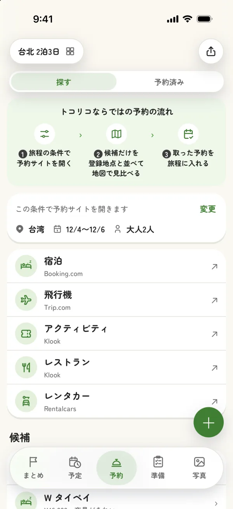
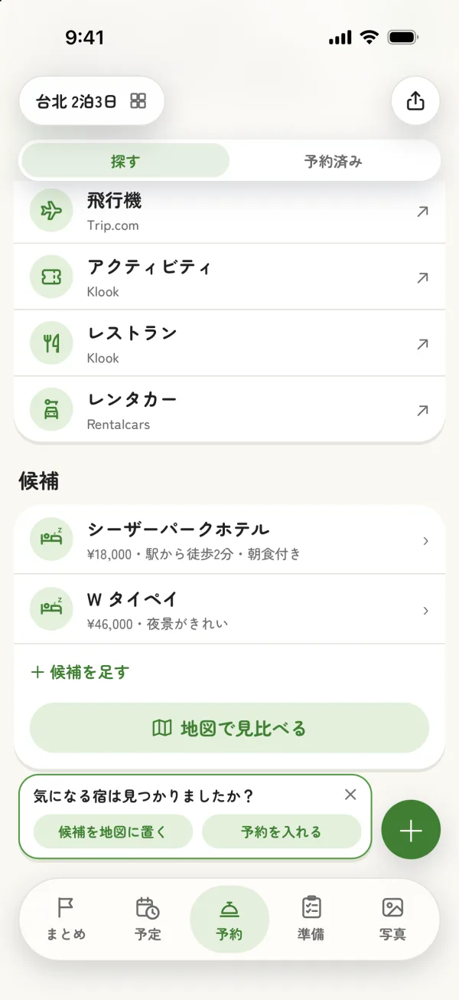
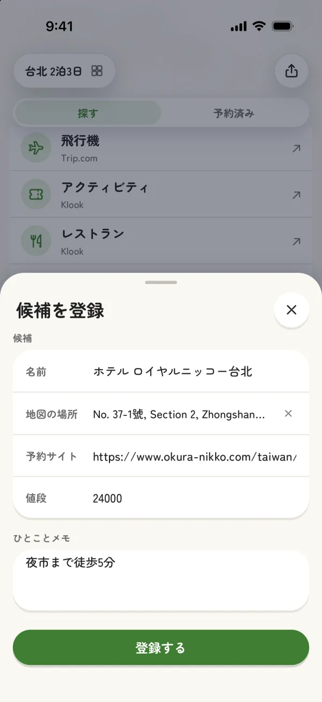
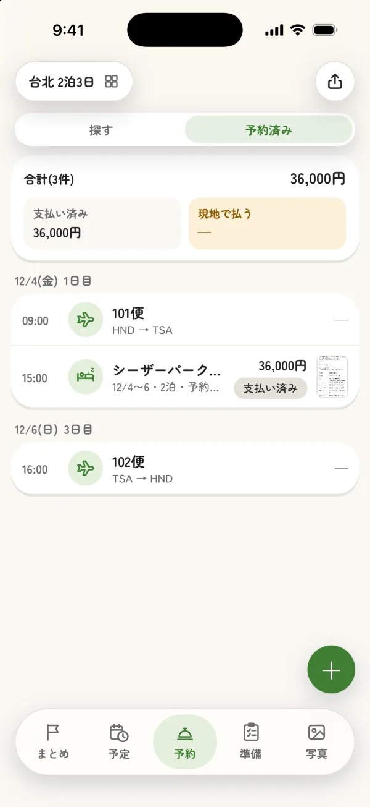

予約も、旅程といっしょに
宿や飛行機、アクティビティの予約サイトを、旅行の条件のまま開けます。気になった所は候補に控え、取った予約はそのまま旅程に入ります。
1探す
旅行の条件で、
予約サイトを開く
行き先・日程・人数をそのまま渡して、宿や飛行機、アクティビティの予約サイトを開けます。

2控える
気になった宿を、
候補に控える
予約サイトから戻ると、見つけた宿を値段やひとことメモと一緒に控えられます。宿のページの URL を貼っておくと、あとでトコリコから同じページを開けます。


3比べる
候補を並べて、
比べる
控えた候補は、値段とメモを並べて、行く場所と一緒に地図で見比べられます。
台北 2泊3日
探す
予約済み
宿12/1 〜 12/3・2泊
↗ホテル 中山¥18,000 ・ 夜市まで徒歩5分
›ホテル 信義¥46,000 ・ 夜景がきれい
›ホテル 大安¥24,000 ・ 駅から徒歩2分・朝食付き
›＋ 候補を足す
地図で見比べる
気になる宿は見つかりましたか？
候補を地図に置く
予約を入れる
まとめ予定予約準備写真
候補を登録
名前ホテル 大安
地図の場所台北市 大安区
値段¥24,000
ひとことメモ駅から徒歩2分・朝食付き
登録する
中山
信義
大安
台北駅
2
1
3
¥18,000
¥46,000
¥24,000
←候補を見比べる
ホテル 中山候補・宿泊
値段¥18,000
メモ夜市まで徒歩5分
ホテル 大安候補・宿泊
値段¥24,000
メモ駅から徒歩2分・朝食付き
予約を入れる
✦AIで読み取る
✎手動で登録
中山
大安
1
2
3
台北 2泊3日
12/1(火)1日目
12/2(水)2日目
12/3(木)3日目
09:00
101便羽田 (HND) → 台北松山 (TSA)
21分 ・ 5.8km空き 3時間
15:00
ホテル 大安チェックイン
まとめ予定予約準備写真
4まとめる
取った予約を、
旅程に入れる
予約のスクリーンショットを AI が読み取り、旅程に入れます。取った予約は一覧にまとまります。
